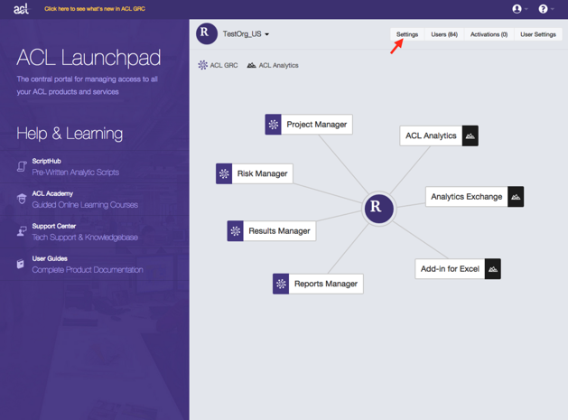
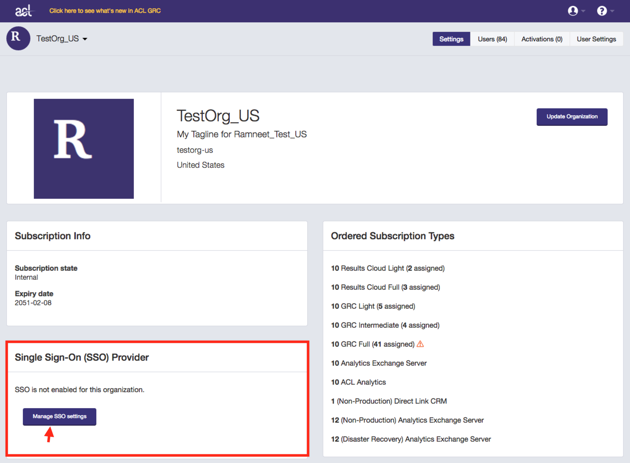
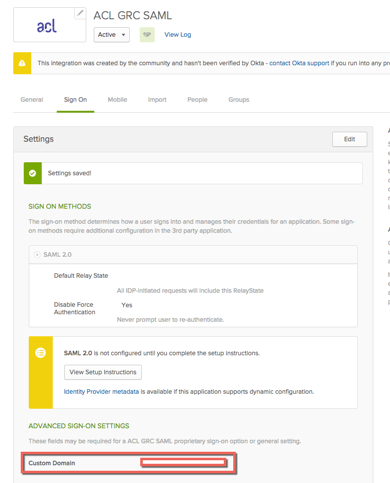
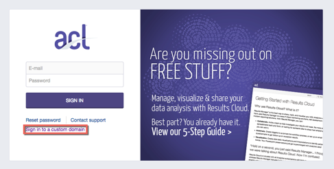
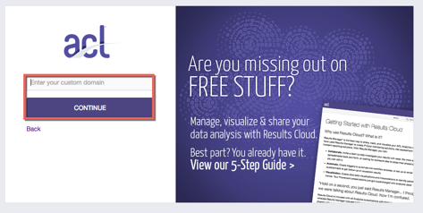

Login to your ACL account as an administrator.

In the Settings pane, under the Single Sign-On (SSO) Provider section, click on Manage SSO Settings:


Sign in to the Okta Admin app to generate this variable.
Sign in to the Okta Admin app to generate this variable.
Sign in to the Okta Admin app to generate this variable.

Done!
Notes:
IdP-initiated flows, SP-initiated flows, and Just In Time (JIT) provisioning are all supported.
For SP-initiated flows:

